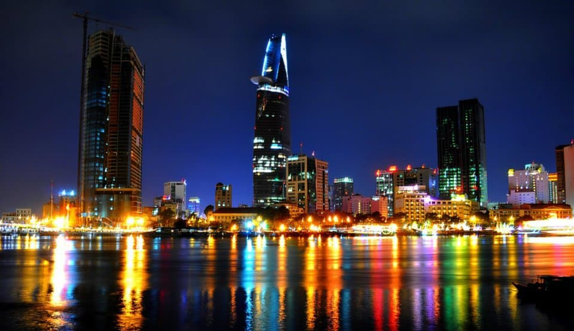
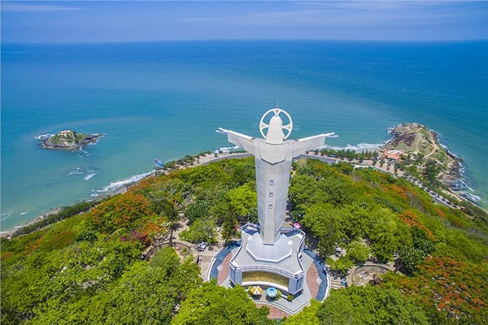
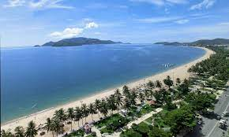
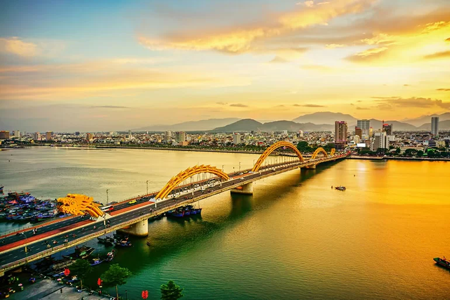
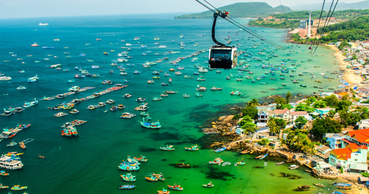
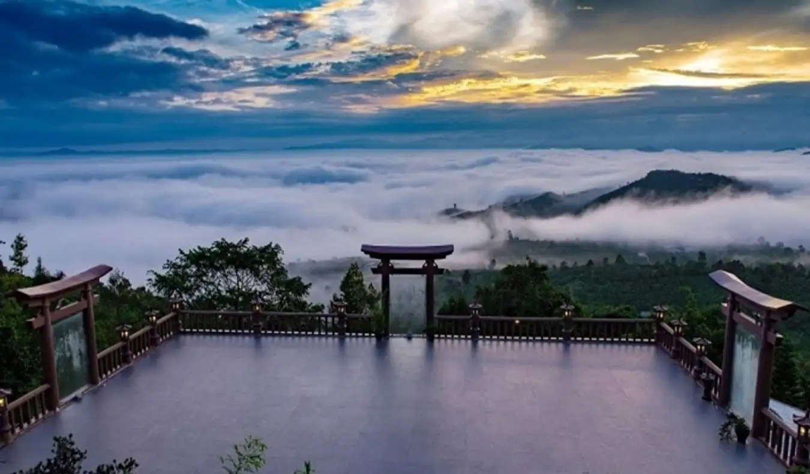
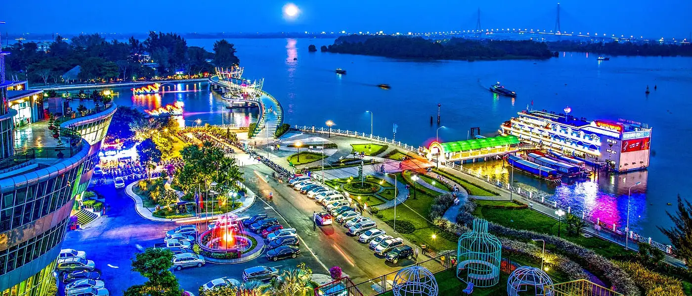
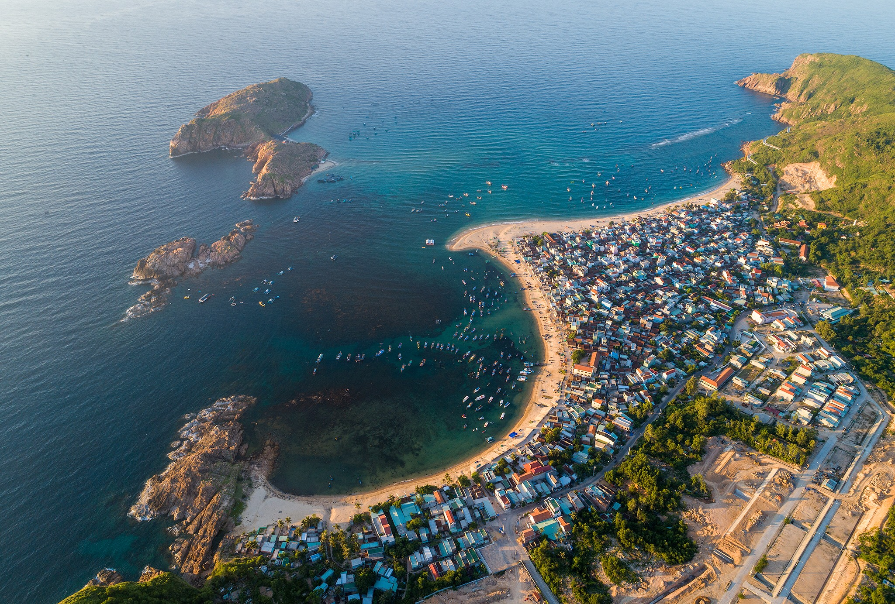
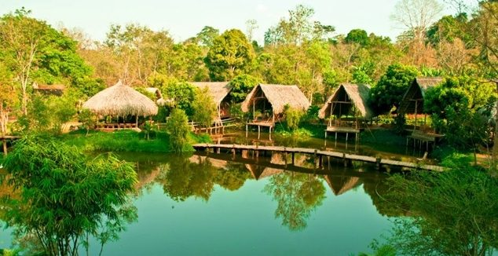
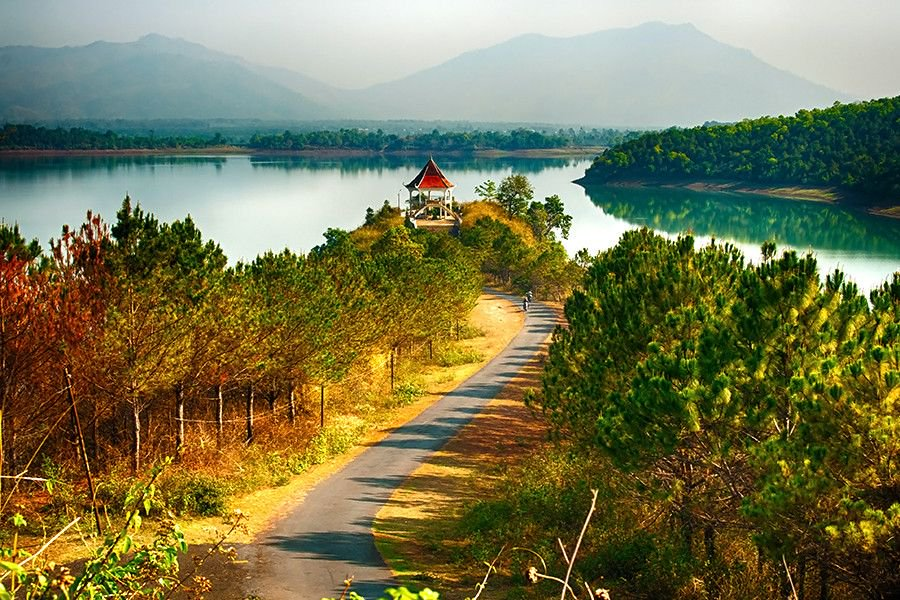

Nếu Tết Âm Lịch là khoảng thời gian quây quần bên gia đình thì Tết Dương Lịch lại là dịp hoàn hảo cho những chuyến du lịch cùng bạn bè. Vào dịp này, thường chúng ta sẽ có 3-4 ngày nghỉ, có thể thỏa thích vi vu đó đây tận hưởng những trải nghiệm mới. Cùng Go2Joy khám phá xem nên đi địa điểm du lịch tết dương lịch 2023 ở đâu nhé.
Mùa xuân thường ít mưa, không khí mát mẻ và thiên nhiên đâm chồi nên đây là khoảng thời gian cực kỳ lý tưởng để đi du lịch. Thời tiết sẽ dao động trong khoảng 18-25 độ nên tâm trạng của mọi người cũng trở nên thoái mái hơn, thích hợp cho những chuyến đi khám phá.
Phong cảnh mùa xuân cũng thêm phần tuyệt sắc khi hàng ngàn loại hoa đua nhau nở. Mỗi một vùng miền sẽ có loài hoa đặc trưng khác nhau để du khách thoải mái ngắm nhìn. Đây cũng là thời điểm phù hợp để bạn tham quan các thác nước hùng vĩ. Vì đã qua mùa mưa nên thác sẽ chảy mạnh, tạo thành những dòng nước siết, bọt trắng xóa vô cùng đẹp mắt.
Đầu năm cũng là dịp lý tưởng để các bạn chào mừng năm mới một cách đầy hứng khởi. Năm mới mọi điều mới, còn gì phù hợp việc khám phá một địa điểm mới và có được những trải nghiệm mới.
Du xuân đầu năm cũng là cách “tự thưởng” cho bản thân sau một năm dài miệt mài cố gắng. Hãy cho bản thân một thời gian nghỉ ngơi, hồi sức để có thể trở lại công việc một cách mạnh mẽ và hiệu quả hơn.
Hồ Chí Minh là một trong những thành phố phát triển nhất Việt Nam nên khu vực này chắc chắn có rất nhiều địa điểm để tham quan và khám phá. Dù bạn là du khách từ nơi khác đến hay dân Sài Gòn muốn staycation thì đều có rất nhiều tọa độ nổi tiếng để bạn thoải mái vui chơi.
Nếu bạn là người đam mê khám phá ẩm thực thì thành phố Hồ Chí Minh có đủ mọi loại món ăn từ truyền thống đến Châu Âu, từ Hàn sang Nhật. Những bạn thích check-in sống ảo chắc chắn sẽ phải choáng ngợp bởi những quán cafe được thiết bắt mắt và cực kỳ độc đáo.
Những bạn muốn phá lịch sử hào hùng của dân tộc Việt Nam trong thời kỳ chống Mỹ chống Pháp có thể đến tham quan các bảo tàng, các khu du tích. Nói chung, ở thành phố Hồ Chí Minh cái gì cũng có, mức giá cũng phải chăng, thích hợp cho một chuyến du lịch ngắn ngày.
Vũng Tàu cũng là thành phố biển rất được yêu thích ở khu vực miền Nam. Nằm cách Sài Gòn chỉ 130km, bạn sẽ mất khoảng 3 tiếng để di chuyển đến đây, nhờ vậy mà Vũng Tàu đã trở thành địa điểm lý tưởng để “đổi gió” mỗi khi bạn cần được thư giãn.
Thành phố biển Vũng Tàu có vị trí địa lý cực đẹp khi sở hữu cả núi và biển, nhờ vậy mà bạn có thể tham quan thỏa thích. Tắm biển, leo núi, đứng trên núi ngắm biển là những hoạt động được du khách yêu thích khi đến đây. Món ăn đặc sản mà bạn không thể bỏ lỡ là bánh căn, hải sản, bông lan trứng muối, lẩu cá đuối,…
Thành phố biển Nha Trang được nhiều tạp chí nước ngoài bình chọn là bờ biển đẹp nhất Việt Nam, nên chắc chắn không thể thiếu cái tên này trong danh sách các địa điểm du lịch tết dương lịch 2023 rồi. Nha Trang có khi hậu ôn hòa, mùa mưa sẽ kết thúc vào đầu tháng 12 nên các bạn có thể thoải mái khám phá khi đến đây vào tháng 1.
Nha Trang có đường bờ biển dài và ít sóng, rất thích hợp cho các hoạt động tắm biển. Bãi tắm chính của thành phố là bãi Trần Phú cũng rất sạch và trong. Ngoài ra, VinWonders và Thủy cung Vinpearl Nha Trang cũng là tọa độ vui chơi nổi tiếng với vốn đầu tư cực khủng.
Từ lâu, Đà Nẵng đã được xem là thành phố đáng sống nhất Việt Nam. Thành phố Đà Nẵng có địa hình đa dạng, với cả biển, bán đảo, vùng vịnh, đồi núi nên rất được du khách yêu thích. Một điều khiến Đà Nẵng được nhiều người yêu thích chính là bởi giá cả. Không giống những thành phố du lịch khác, các mặt hàng ở đây có mức giá rất phải chăng, dù là bán cho dù khách trong nước hay nước ngoài
Một trong số những địa điểm vui chơi nổi tiếng ở Đà Nẵng phải kể đến: Asian Park, Bà Nà Hills, chùa Linh ứng. Từ thành phố Đà Nẵng có thể dễ dàng di chuyển đi tham quan cả ba di sản văn hóa thế giới gồm cố đô Huế, phố cổ Hội An và thánh địa Mỹ Sơn
Thiên đường nghỉ dưỡng Phú Quốc chắc chắn không thể vắng mặt trong danh sách các địa điểm du lịch tết dương lịch 2023. Hòn đảo này nằm tách biệt so với đất liền nên được bao bọc bởi rất nhiều bãi biển đẹp. Nhờ được thiên nhiên ưu ái nên thành phố du lịch này có rất nhiều địa điểm vui chơi thú vị.
Bạn có thể ngắm nhìn hệ sinh vật biển đa dạng khi lặn ngắm săn hô hoặc đi bộ dưới đáy biển, thoải mái khám phá ẩm thực với những món hải sản tươi ngon và mức giá rẻ bất ngờ. Hòn đảo này cũng là một trong những nơi có diện tích rừng nguyên sinh lớn nhất Việt Nam
Lâm Đồng là một trong những tỉnh thành có diện tích lớn, với 2 thành phố là Đà Lạt và Bảo Lộc cùng với 10 huyện khác. Do đó, khu vực này chắc chắn không thiếu những địa điểm thu hút du khách. Nhờ khí hậu ôn hòa cùng thiên nhiên hùng vĩ, Lâm Đồng đã trở thành điểm đến lý tưởng của nhiều khách du lịch.
Ngoài thành phố mộng mơ Đà Lạt cực nổi tiếng thì tỉnh này cũng còn rất nhiều tọa độ thú vị để bạn khám phá như: Sông Đa Dưng ở Lâm Hà, Vườn quốc gia Cát Tiên ở Bảo Lâm, Làng Cù Lần ở Lạc Dương, Chùa Linh Quy Pháp Ẩn ở Bảo Lâm,…
Cần Thơ là thành phố sầm uất và phát triển nhất ở Đồng bằng sông Cửu Long, được xem là thủ phủ của miền Tây Nam Bộ. Thành phố này vị trí trung tâm đồng bằng sông Cửu Long nên rất phát triển về giao thương và giao thông đường thủy. Một trong số những điểm thu hút du khách ở thành phố này chính là Chợ Nổi
Với hệ thống sông ngòi dày đặt, người dân sống ở đây đã phát triển mô hình buôn bán mới và vô tình thu hút được nhiều du khách. Những chiếc ghe chở đầy hàng hóa sẽ tụ họp trên sông để buôn bán, từ những loại nhu yếu phẩm đến các loại thức ăn đều có. Chắc chắn sẽ mang đến cho bạn những trải nghiệm thú vị.
Quy Nhơn có cảnh quan địa lý cực kỳ phong phú với: Núi Đen, Rừng nguyên sinh Cù Mông, Đầm Thị Nại, Hồ Phú Hòa, Biển Quy Nhơn, Bán đảo Phương Mai và Đảo Nhơn Châu. Bờ biển Quy Nhơn dài 72 km là nơi thu hút du khách đến tham quan. Ngoài ra, tài nguyên biển ở đây cũng rất phong phú và có nhiều đặc sản quý.
Quy Nhơn có khí hậu nóng ẩm đặc trưng của duyên hải miền Trung với nhiệt độ quanh năm mát mẻ nên bạn có thể đến Quy Nhơn bất cứ lúc nào. Một số món ăn đặc trưng không thể bỏ lỡ khi đến thành phố biển này là: cá ninja, bánh xèo tôm nhảy, cá mương cuốn rau rừng, bún tôm, bún cá,…
Đắk Lắk sở hữu vị trí địa lý cực kỳ lý tưởng khi nằm ở trung tâm của 5 tỉnh Tây Nguyên. Khu vực này có tự nhiên hùng vĩ nhờ sự kết hợp hòa hợp giữa sông hồ và đồi núi như: Thác Dray Nu, Hồ Lắk, Vườn Quốc gia Yok Đôn, Vườn Quốc gia Chư Yang Sin, Khu Bảo tồn thiên nhiên Ea Sô, Nam Ka và nhiều khu rừng nguyên sinh khác.
Thêm vào đó, Đắk Lắk còn nổi tiếng với những sản vật như cà phê, cao su, tiêu, ca cao, voi… Khi nhắc đến voi thì không thiếu Bản Đôn – nơi nổi tiếng với nghề săn bắt và thuần dưỡng voi rừng. Nền văn hóa truyền thống ở đây cũng mang đậm bản sắc của các dân tộc đang tồn tại và phát triển ở Đắk Lắk
Gia Lai là một tỉnh nằm ở phía Bắc của Tây Nguyên nên khu vực này cũng sở hữu thiên nhiên cực kỳ hùng vĩ và nền văn hóa đa dạng. Nhờ vào địa hình nhiều đồi núi và thác đá nên những bạn mê khám phá có thể tha hồ thám hiểm thác Lồ Ồ, thác Chín Tầng, hồ Ayun Hạ, hồ Ialy hay rừng nguyên sinh KonKaKinh và KonJaRăng và chắc chắn không thể bỏ qua Thủy điện Ialy – một công trình mang tầm cỡ quốc gia.
Những di vật khảo cổ ở Biển Hồ cũng minh chứng cho sự phát triển lâu dài của những người dân ở khu vực này. Thêm vào đó, Văn hóa cồng chiêng Tây Nguyên ở đây đã được UNESCO công nhận là di sản văn hóa phi vật thể của toàn nhân loại.
Top 10 địa điểm du lịch tết dương lịch 2023 mà BookingHotel đã giới thiệu ở trên đều có thể áp dụng chương trình khuyến mãi giảm 10%. Nhanh tay đặt phòng để du xuân mừng năm mới cùng những người yêu thương nhé.